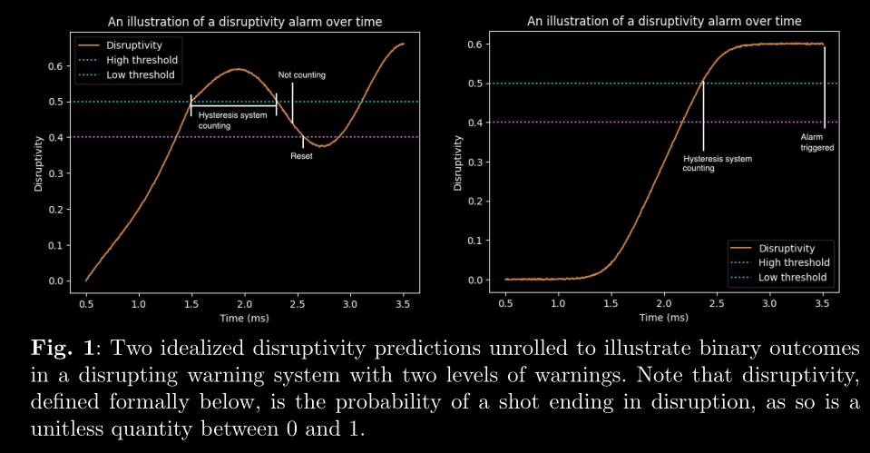
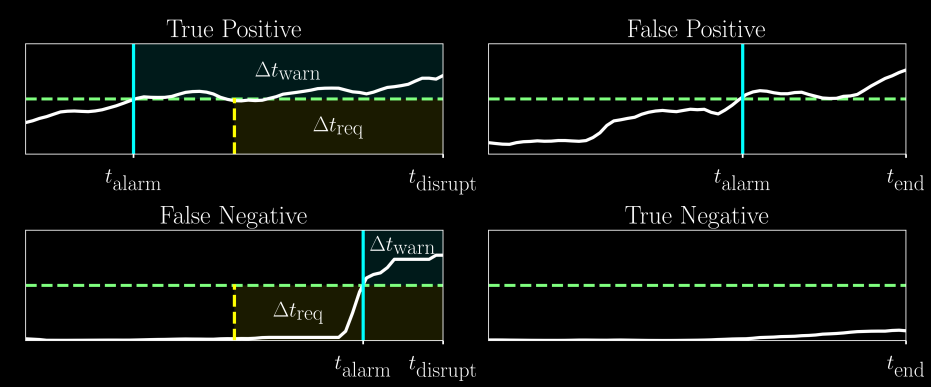
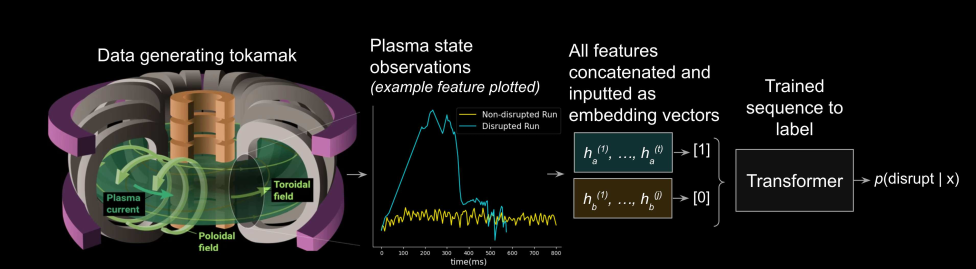

Disruption Bench#
Paper title: DisruptionBench: A robust benchmarking framework for machine learning-driven disruption prediction
Introduction#
Plasma discharges in tokamaks currently suffer from plasma disruptions, or loss of plasma stability.
Disruptions deposit large amounts of heat and stress loads on the plasma facing components (PFCs), reducing their lifetime.
Disruption arises from heterogeneous causes. Meaning they don’t always arise from the same sequence of events, or the there is no single cause for disruptions.
Disruption can be caused by:
MHD instabilities like tearing modes or vertical displacement events (VDEs)
Operational limits being exceeded (density, current, etc.)
Hardware issues or control system failures,
Or combinations of minor effects stacking up over time.
We can use ML models to predict disruption while a discharge is going on. The model should give us enough time to carry out mitigation steps to control further damage. Here are different ways mitigation approaches:
Injection of nobel gases such as Neon or Argon, which reduces the thermal loads.
Firing a pellet of frozen hydrogen to cool the plasma.
The idea of the paper is:
Real time, generalised model for disruption prediction.
Model comparison. They are comparing different models to see which one is the best.
Top model had a AUC of 0.97 and F2 score of 0.89.
Exploratory Insights:
sample rate dependence. Some models use use them and some don’t.
Long term memory: Except transformers, all models have some form of long term memory and limited data context.
Long term problems#
Using probabilistic models to gain a better theoretical understanding of the tokamak plasma dynamics.
Uncovering causal mechanisms behind the tokamak plasma dynamics including those leading to disruptions.
Moving from prediction to control : building systems that not only shut down a plasma discharge, but prolong and continue its progress while avoiding disruption.
Problems with existing ML techniques#
Evaluation approches are not standardised.
Some papers use an end of discharge AUC classification.
Some use hysteresis type evaluation but have not made their code public.
State-of-the-art systems are not accurate enough for real world use-cases.
Most of them reach 90% True Positive Rate (TPR).
Next generation devices will require models to reach 95% TPR at a 5% FPR.
Models are not tested across multiple tokamaks.
Simply because data is not available.
Lack of zero shot transfer learning.
state of the art models drop to ∼77% TPR at 5% FPR when considering zero-shot transfer metrics.
Prior models are dependent on a tokamak’s unique sampling rate.
This is due to the use of different diagnostic systems.
The memory within a tokamak plasma is poorly understood.
how much data context should we explicitly show our models when asking them to make decisions about a plasma state seconds away from its start.
Dataset size
No one has ever used big data.
DisruptionBench Framework#
Goal: Predict if a plasma discharge will end in a disruption.
Input: A time series x of length t, where each point is a vector of k measurements (like magnetic field, current, etc.).
Output: At each time step, the model predicts the probability of a disruption happening in the future:
Disruption Mitigation System (DMS)#
It mimics how real-world tokamaks decide when to intervene. This involves:
High threshold: If the predicted disruption probability is above this, a “warning” is triggered.
Low threshold: If the prediction falls below this, the warning is cleared.
Hysteresis: Helps avoid frequent on-off toggling — the model must sustain high probability for several steps before declaring a disruption.

Left plot (False Alarm Avoided):
The disruptivity crosses the high threshold and system starts counting.
But before it meets the hysteresis requirement (i.e., staying above for long enough), it dips below the low threshold, causing a reset.
So no alarm is triggered — the model had doubts.
Right Plot (True Alarm Triggered):
The model’s output rises and stays confidently above the high threshold.
The hysteresis system counts enough consecutive high predictions
The alarm is officially triggered.
True and false positives and negatives#

t_alarm: Time the alarm is triggered by the model.t_disrupt: Actual time of disruption (if it happens).t_end: End of the pulse (used in non-disruptive shots).Δt_req: Required lead time, set by us, representing how early we want the warning before a disruption.Δt_warn: Actual warning time given by the model.
We only want true positive and true negative. False positive and false negative are not useful.
Calculation of TPR and FPR#
If an alarm is triggered before \(T_{useful}\) , it is classified as a true positive. If not, it is a false negative.
For non disruptive discharges, if an alarm is ever triggered, it is recorded as a false positive. Else, it is a true negative.
Dataset stats#
Tokamak |
τ (Warning Time) |
Number of Discharges |
Avg. Discharge Length |
Sampling Rate |
|---|---|---|---|---|
Alcator C-Mod |
50 ms |
4,510 |
0.52 s |
5 ms |
DIII-D |
150 ms |
8,608 |
3.7 s |
25 ms |
EAST |
400 ms |
14,347 |
5.3 s |
100 ms |
τ is defined as the length of time before the end of a disrupted shot after which the discharge is assumed to be in a disruptive state.
Shots smaller than 125ms were discarded.
Discretised all time series to a uniform 5 ms grid.
Using forward-fill interpolation.
They chop off the last 40 ms from each shot during training:
It gives the model time to predict before the disruption hits and not focus on post disruption behaviour.
Forwards Fill Interpolation#
If a value is missing, it is filled with the last known value.
here is a simple example in pandas:
import pandas as pd
# Original sparse data (say from EAST at 100 ms)
data = {
'Time': [0, 100, 200], # in milliseconds
'Value': [1.0, 1.3, 1.7]
}
# Convert to TimedeltaIndex so we can resample
df = pd.DataFrame(data)
df['Time'] = pd.to_timedelta(df['Time'], unit='ms')
df = df.set_index('Time')
# Now resample to 25ms intervals
df_upsampled = df.resample('25ms').asfreq()
# Fill missing values using forward fill
df_filled = df_upsampled.ffill()
df_filled.index = df_filled.index.total_seconds() * 1000 # convert back to ms. By default it is days hh:mm:ss.ssssss
df_filled.index = df_filled.index.astype(int)
print(df_filled)
Value
Time
0 1.0
25 1.0
50 1.0
75 1.0
100 1.3
125 1.3
150 1.3
175 1.3
200 1.7
Outlier Handling via Clipping#
Clip the bottom 1% and top 1% of each signal (feature-wise).
If a value < 1st percentile → set it to 1st percentile value.
If a value > 99th percentile → set it to 99th percentile value.
Tokamak sensors sometimes spike due to noise or glitches, no need to let those dominate learning.
QuantileTransformer#
After clipping, they apply a quantile transformation to each feature.
maps the clipped data to a uniform or Gaussian distribution, ensuring:
No outliers.
Smooth gradients
No feature dominates the learning process.
For each diagnostic signal (feature), they aggregate all values from all shots, then clip at the 1st and 99th percentiles.
So when we plot box plot the shape of the variable to be plotted is [num_total_time_points_across_all_shots, num_features].
We can use
sklearn.preprocessing.QuantileTransformer.
Missing values#
The amount of missing values in disruptions vs non-disruptions were fairly different, with roughly twice as many missing values present in disruptions.
forward fill interpolation was used to fill in missing values.
TIME was used as a feature”
Uneven Sampling Before Disruptions#
The dataset released by Zhu et al. has a quirk:
Right before a disruption, the sampling rate increases — like going from 20 ms intervals to 10 ms or faster — but this doesn’t happen before non-disruptive shots.
It’s because of how the physics equilibrium solver is set up in the tokamak.
ML model might learn to associate “high sampling rate” with disruptions, not physics.
Modelling#
The problem is a sequence-label prediction. That is, we predict single binary integer given a series of observed features.

They sampled overlapping time windows, resulting in significant increase in the number of samples/ input sequence.
They are using features and labels from the same time step in the time window.
The τ Trick#
This is not a trick but a simple \(T_{lead}\) or \(\tau\). Which is used to label the data with disruptive labels starting from \(T_{disrupt} - \tau\).
Only allow time windows with length smaller than half of number of points in between
t_disruption - t_leadandt_disruption.If a window ends just before
t_disruption - t_lead, then the earliest point in that window is still well outside the danger zone. They don’t mention the windows size in the paper, so we may never know.
Results#
This is the main wandb project page: https://wandb.ai/lucas-spangher/HDL-improvement-transformer
Sweep results: https://wandb.ai/lucas-spangher/HDL-improvement-transformer/table?nw=nwuserlucasspangher
Reports: https://wandb.ai/lucas-spangher/HDL-improvement-transformer/reportlist
Metrics#
AUC-ROC: Area under the receiver operating characteristic curve.
F2 score: A weighted average of precision and recall. It is used to give more importance to recall than precision.
True Positive Rate (TPR): The ratio of true positives to the sum of true positives and false negatives.
False Positive Rate (FPR): The ratio of false positives to the sum of false positives and true negatives.